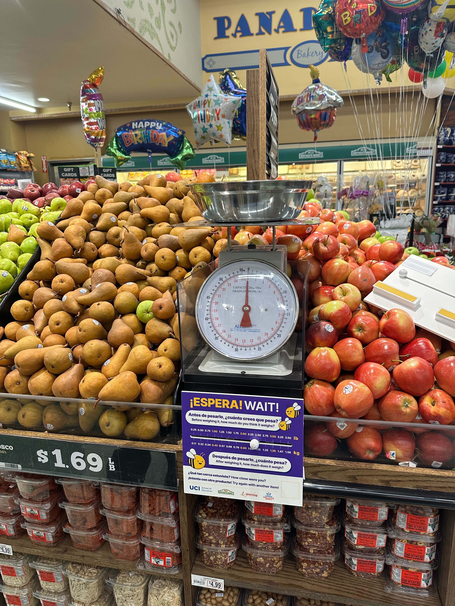
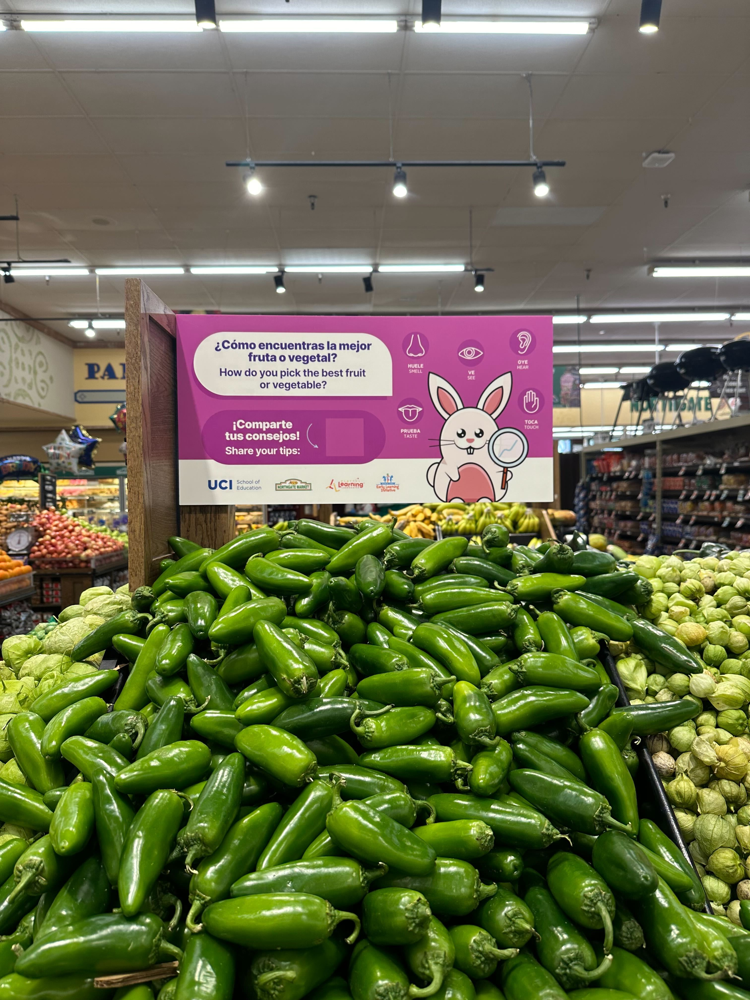
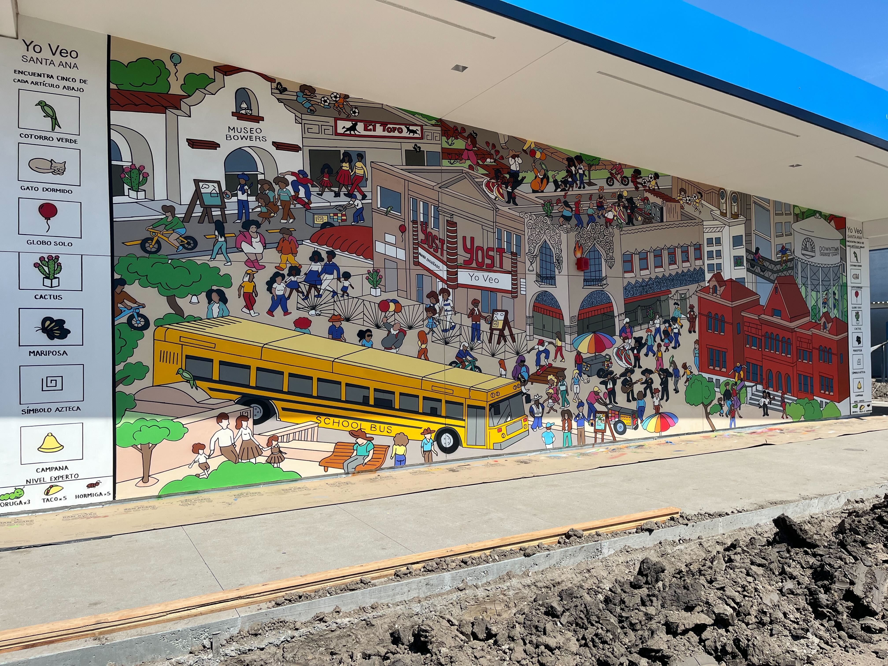
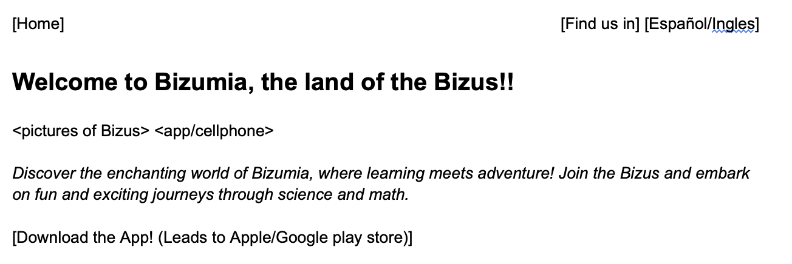
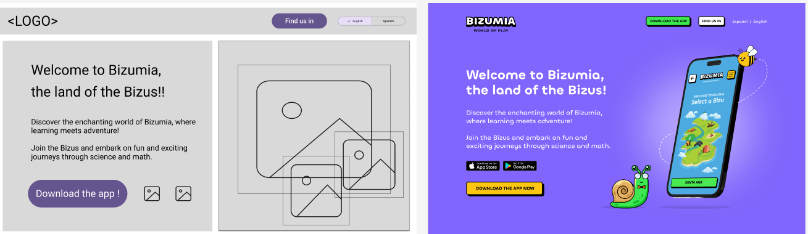
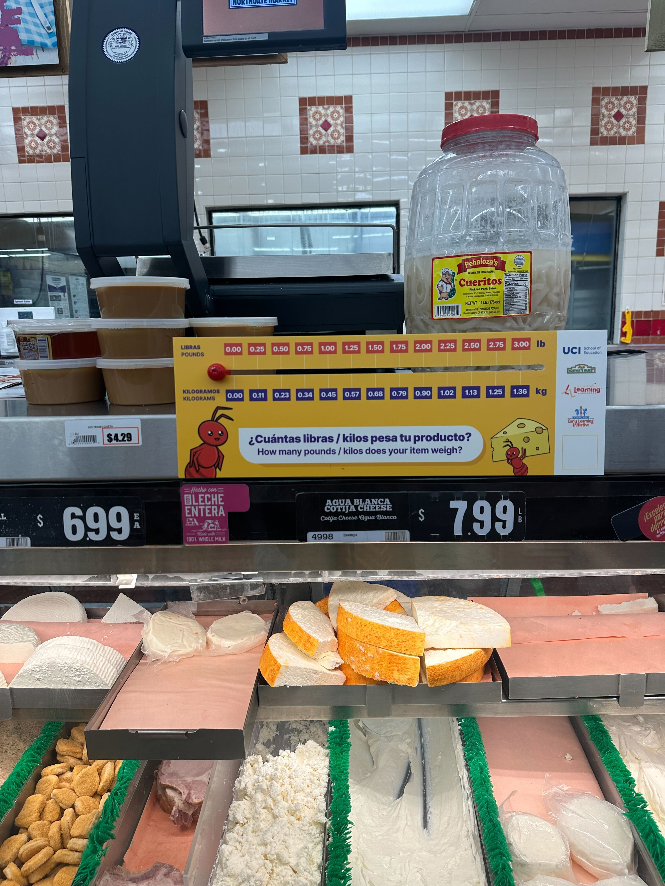
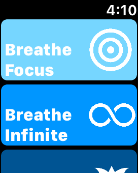
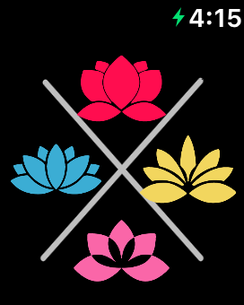

Ingredients For Learning (I4L) [current]
Roles: Project manager, lead UX researcher
Tasks: Lead reserach dseign, implementing and executing the participatory design sessions and pilot study.
Facilitate participatory design sessions.
Methods: Participatory design, naturalistic pilot study, focus group, observation, qualitative analysis
Stakeholders: University of Pittsburgh, UC Irvine, Santa Ana Early Learning Initative, parents and children of Santa Ana community.
Challenges: Create flexiblity in a STEM and literacy initative for early childhood to the everyday routines and practices of families in their homes.
Description:
I4L is a collaborative project that promotes science and literacy skills among Latino preschoolers through culturally relevant, food-centered learning experiences.
Expected impact:
Working closely with families, the project co-designs interactive activities and educational resources rooted in everyday food routines, empowering parents to take active roles in their children's early STEM learning.
Give families the access to integrate STEM and literacy skills in their everyday food routines at homes, helping school readiness in Latine kids 3-5
Increasing learning opportunities for children in healthcare environments [current/upcoming]
Roles: Project manager, lead UX reseracher
Tasks: Lead the planning, design, and execution of participatory design to design and test physical installations and app for deployment.
Methods: Participatory design methods, TBD.
Stakeholders: : Collaboration of 3 universities, Children's Hospital of Orange County (CHOC), Santa Ana Early Learning Initative, staff at the medical center, families and children that receive medical care in that center
Challenges: Balancing all the stakeholder's requirements, preferences, and making the experience fun and engaging.
Searching for an intersection of health advice and culturally sustaining practices that adapt to our community, but can be expanded to more populations.
Description: This project is an extension of Playful Learning Landscapes and the mobile app (see below) to CHOC clinics, tackling community and doctor's concerns on health, specially the balance between nutrition, sleep, and body movement.
Expected Impact:
The installations are expected to deepen families’ health-related conversations, strengthen STEM literacy, and boost satisfaction during their doctor visits.
igniting Diversity Representation and Equitable Access to Machine learning (iDREAM)
Roles: Project manager, lead researcher, curriculum co-creator,.
Tasks: Led the end-to-end research pipeline, from building community relationships and recruiting participants to study design.
Conducted 3 participatory design sessions, facilitated an 8-session pilot program, and performed final interviews with mentors.
Methods: Participatory design, curriculum development and iteration, semi-structured interviews, observation, qualitative thematic analysis
Stakeholders: ListoAmerica organization (mentors), SBX Youth and Family services (CEOs/staff, mentors and youth), and AI experts.
Challenges:
Engaging and balancing multiple stakeholders' interests, goals, priorities and perceptions.
Infusing ethics in an introductory AI program in a way that is the core of the program and honors and sustains the community's cultre, values, and practices.
Making the AI content accurate, accessible to youth of all computer schience and math skill levels, relevant to them, while engaging in justice-oriented topics
Description: iDREAM is a community-based educaitonal initative co-designed to empower minoritized youth (ages 12–18) with foundational knowledge of
in machine learning through culturally sustaining curricula focused on equity, ethics, and social justice.
Impact:
Developed a replicable program tailored for ListoAmerica and SBX communities, successfully piloted with 11 youth.
we are currently refining the program for adaptability within the Clubhouse modular structure to support youth across varied cultural backgrounds.
Playful Learning Landscapes companion mobile app
Roles: UX researcher, qualitative data analyst.
Tasks: Co-facilitated co-design sessions and usability testing, create coding schemes from audio and drawings, transforming them into cultrually sustaining design assets for the app
Co-led the coordination and management of five physical installations at parks, grocery stores, and bus stops in collaboration with stakeholders, including researchers, designers, artists, contractors, community members, and City of Santa Ana officials.
Additionally, co-created prototypes for the physical installations, gave feedback on wireframes and prototypes of the phone app, and created layout for the main website.
Methods: Participatory design, participant observation, usability testing (think aloud), qualitative data analysis (coding, thematic analysis)
Stakeholders: UC Irvine, Santa Ana Early Learning Initiative (SAELI), Santa Ana local government, parents and members of the Santa Ana community, HCI/educators, NSF
Challenges:
Expand access to our activities for youth who cannot go to the physical instalations in a way that sustains and reflect deep community's values.
Providing fun and replayability in physical installations and virtual app while achieving the learning goal.
Balance stakeholder intersts and strive for equitable relationship in a situation of power differentials while building the installations.
Description:
This Project is an extension of the larger *Playful Learning Landscapes* initiative, which reimagines public spaces as interactive learning hubs for STEM education through play.
Through community-based, participatory design research and collaboration with the Santa Ana Early Learning Initiative (SAELI), we are co-designing a mobile app that enhances interaction with these installations—both on-site and online.
This app not only deepens engagement for children completing the activities in person but also makes our activities accessible to children who cannot physically visit the installations
Right now, we are creating prototypes that reflect children's values, and the communtiy's ways of knowing and being.
Impact:
Our work with the Santa Ana community has fostered a democratic design process, amplifying community voices, and promoting pride and ownership in the community.
Through public installations like an I-Spy-style mural at a school, supermarket signage, and a bust stop abacus inspired by community stories of immigration, education, and intergenerational STEM knowledge, we’ve created meaningful community-based resources.
Upcoming installations include a life-size "How Tall Am I", a game board, and more community-centered murals



Example of the text layout webpage and wireframe I created, and the final product from the graphic designer.


Examples of prototypes I iterated, and the final prodessional and implemented design (with change of characters).
.jpg)
.jpg)

Youth Connections for Wellbeing
Role: Researcher, Faciliator, Curriculum co-creator and Design instructor
Tasks: I co-designed the structure of the program, the curriculum, and co-faciliated the sessions where we taught and co-designed alongside Latine youth. I also co-created the interview protocol and executed interviews.
Methods: Participatory design, semi-strucured interviews, participant observation, culturally sustaining pedagogy, counterstory, qualitative data analysis
Stakeholders: UC Irvine, ListoAmerica Clubhouse, HCI reserachers and educators, 11 youth, Pivotal Ventures
Challenge: Explore Latine's youth intersectional relationships between wellness and technology. What would a tool/idea that is tailored for their wellness and context look like?
Description
Youth Connections for Wellbeing is a multi-stage project that explores youth's insights, agency, and technology engagements to support their wellbeing.
Our stage focused on a participatory design project oriented towards teen digital wellness
The curriculum is based on concepts of cultural responsiveness and community based design, and covered topics such as technology design techniques,
wellness, and cognitive behavioral principles.
We worked and learned with Latinx teenagers, ages 11-22, co-designing tools for wellness using counter storytelling, and culturally susatining design.
Impact:
The program empowered Latine youth to articulate and design for their wellness needs, fostering agency and ownership over their wellbeing.
By developing and presenting wellness tools, the youth highlighted critical themes such as community and inclusion, which are informing our approach to future youth wellness tools and culturally sustaining design.
Our pivot to an online format due to COVID-19 also yielded key insights into virtual engagement strategies that we are sharing as best practices for remote research and design.
Tenacity
Role: UX Researcher, facilitator, and qualitative data analysis.
Tasks: I coordinated a team of 8 graduate students and design interns. I co-designed and executed the interview porotocol, diary study, and surveys.
Analyzed qualiative data from diary studies, interviews/focus groups and provided design insights and feedback.
Tested each design before release, and supervised topics of inclusion and cultural awareness in design.
Methods: participatory design, semi-structured interviews/focus groups, diary studies, surveys, qualitative data analysis
Stakeholders: University of California, Irvine, School in Santa Ana, CA, HCI reserachers and educators, teen youth, NSF, middle and high school teachers
Challenge: How do youth in early adolescence conceptualize self-regulation?
How can we co-design a re-design of an app that captures their concept of self-regulation and that youth will use and is engaging?
Description:
This project used participatory design methods to explore how wearable devices can support self-regulation among teens, and to redesign the Tenacity meditation-based app to better fit youths’ needs.
The project was split into two main parts:Participatory Design Workshop: We collaborated with 27 teens (ages 11-14) from a middle school in Santa Ana, CA, to brainstorm and create tools that aid in self-regulation. The resulting ideas informed the design team’s app redesign process.
Field Deployment and Design Iteration: The re-designed app was tested in a two-week deployment phase with 35 youth participants (ages 11-15) across two states. Feedback was collected to inform further design iterations.
Impact:
These findings influenced both the final app design and our approach to youth-centered digital tools.
This project contributed to a nuanced understanding of how youth-defined self-regulation can be supported through technology, and it provided key insights into designing privacy-conscious, inclusive wellness tools that respect the needs and interests of young users.
App menu, breathe activity, and matching minigame:

